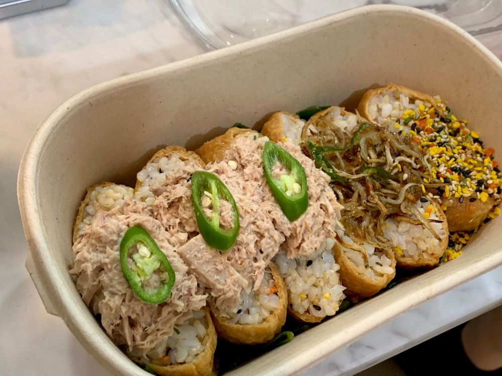

너무 졸립니다!!!!!
너무 졸리다.. 어떡해..?
침샘이 부었뎌.. 그 정도로
붓고ㅋㅋㅋㅋㅋㅋ
졸리다... 오후 5시인데 졸려
나른해
ㅎㅎ
오늘의 점심은
샵 선생님께서 추천해주신
곤약 유부초밥🌼

원래 멸치 2 참치 2 진미채? 2 6개였어요 ㅎㅎ
진미채 반찬을 별로 좋아하지 않아서
진미채를 빼달라고만 했는뎅
참치 하나 추가랑 기본 유부초밥 처럼 가루 뿌려주셨어요
센스가 굿입니다잉🙊
공기 청정기 양 좌우로 왔다갔다 움직이게 틀어놓고
이불 뒤집어쓰고
공기압 마사지 하면서 자고 싶다
아직 겨울이 오지 않았는데
과일 시켰을 때 서비스로 주신
귤이 너무 맛있어가지구
요즘 귤이 먹고 싶다...?
근데
나한테 있는 과일은
배애애🍐<—요렇게 생긴 배.. 말구
그 살짝 황토색에 동그란 아이
집에서 가져왔지~~ !!!
가을이 왔나봐요 🍁
집에 사과랑 배가 있는 거 보면 ㅎㅎ
근데 내가 가을 과일 중에 좋아하는 건 (감)🐾
여러분은 어떤감?🌝
넌 나의 자신감
나에게 엄청 큰 너의 존재감?
눈감아도 느껴지는 촉감?
미안하감..
영감